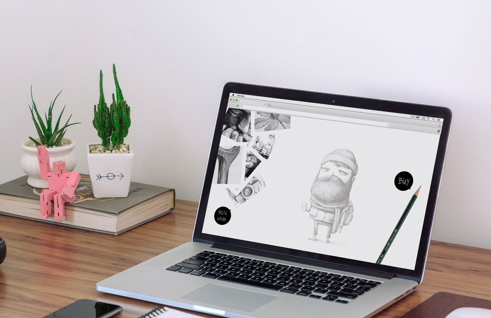
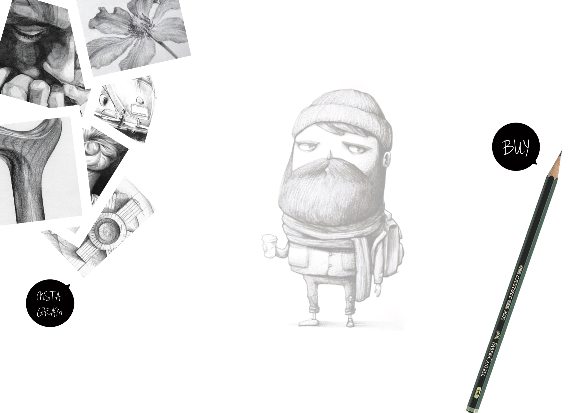

Faber Castell Pencil
A project focusing on transmitting the values and qualities of the iconic Faber Castell 9000 Pencil. It is not about the technical details but the creativity the pencil facilitates, so it is not the form but the function that becomes the center of the project.

